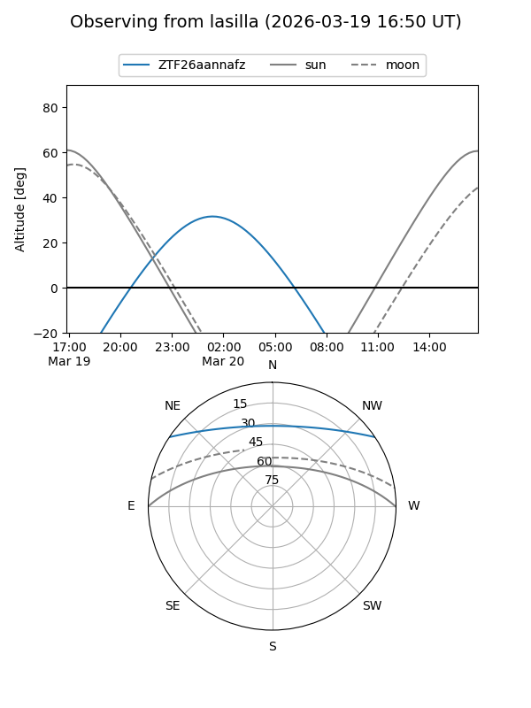
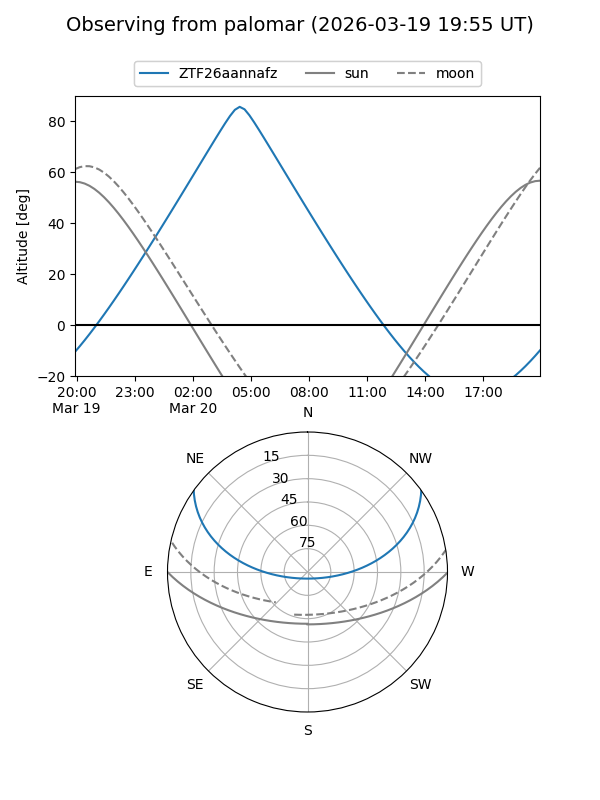

ZTF26aannafz
Target ZTF26aannafz at 2026-03-20 07:03
Aliases and brokers:
FINK: link
Lasair: link
ALeRCE: link
alt names
ZTF26aannafz (ztf,fink_ztf)
Coordinates:
equatorial (ra, dec) = 126.9736,+29.19042
equatorial (HMS+DMS) = 08:27:53.66,+29:11:25.51
galactic (l, b) = (194.1214,+32.67150)
Flags:
Photometry:
last ztfg=20.13
1 ztfg detections
Lightcurve
Visibility


Additional plots